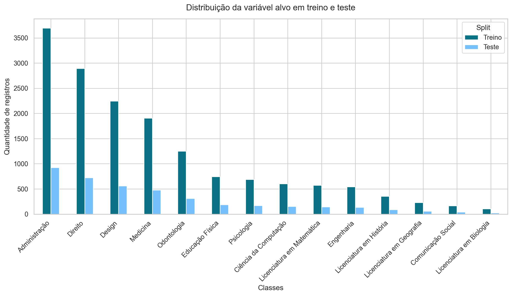

Objetivo
Transformar o dataset bruto em uma base pronta para treino e teste, com um pipeline reprodutível e sem vazamento de dados.
Visão geral
Arquivo de entradadata/dataset_graduacao_indicada.csv
Coluna alvoGraduacao_Indicada
Shape do treino processado(16000, 15)
Shape do teste processado(4000, 15)
Proporção de teste20%
Seed fixa42
Separação de variáveis
| Tipo | Quantidade | Colunas |
|---|---|---|
| Numéricas | 12 | Idade, Anos_Para_Formar, Gosta_Matematica, Gosta_Programacao, Gosta_Biologia, Gosta_Fisica, Gosta_Quimica, Gosta_Arte_Design, Gosta_Comunicacao, Gosta_Negocios, Gosta_Historia, Gosta_Geografia |
| Categóricas | 1 | Curso_Tecnico |
Estratégia de preprocessamento
| Grupo de colunas | Tratamento |
|---|---|
| Numéricas | SimpleImputer(strategy="median") + StandardScaler |
| Categóricas | SimpleImputer(strategy="most_frequent") + OneHotEncoder(handle_unknown="ignore") |
O pipeline é ajustado apenas no conjunto de treino com fit_transform e depois aplicado ao conjunto de teste com transform, evitando vazamento de dados.
Distribuição das classes em treino e teste

Artefatos gerados
| Artefato | Arquivo |
|---|---|
| Pipeline de preprocessamento | artifacts/preprocess_pipeline.joblib |
| Treino processado | data/processed/train.parquet |
| Teste processado | data/processed/test.parquet |
Validações executadas
| Validação | Resultado |
|---|---|
| Nulos no treino processado | 0 |
| Nulos no teste processado | 0 |
| Total de features transformadas | 14 |
| Coluna alvo presente | True |